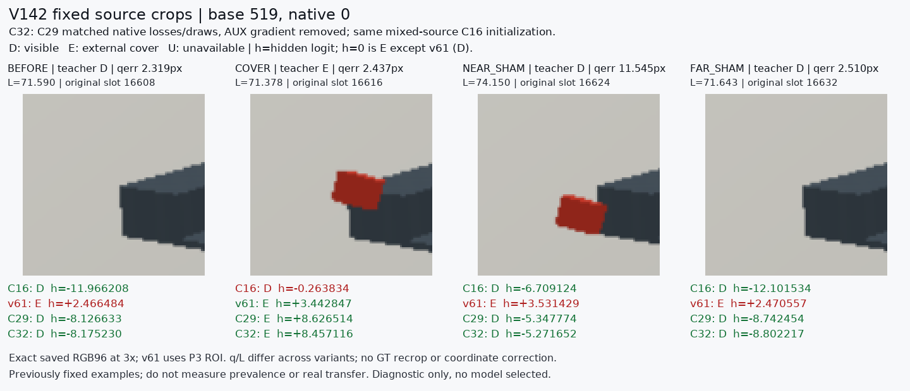
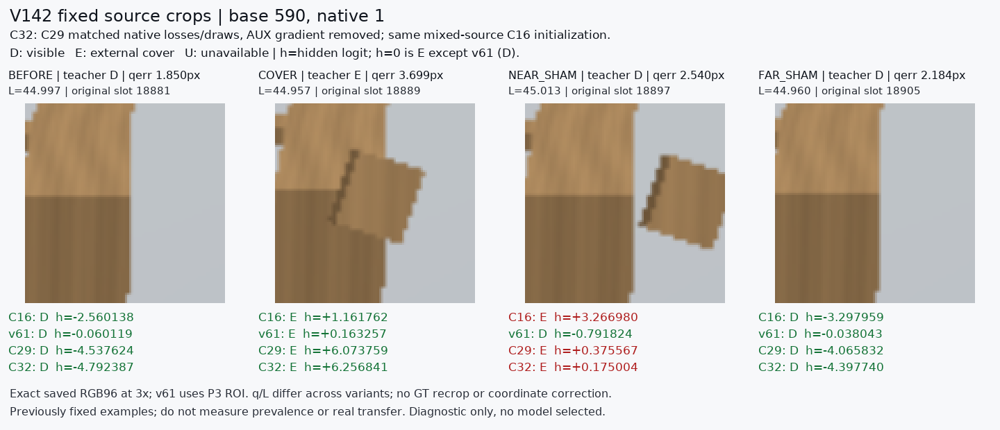

Original fixed two groups, exact existing RGB96 pixels, C16/v61/C29/C32 saved scores. q/L vary across image variants. C32 retains mixed-source C16 initialization; AUX gradient removal is a net-effect diagnosis. No selected model or private evaluation.

